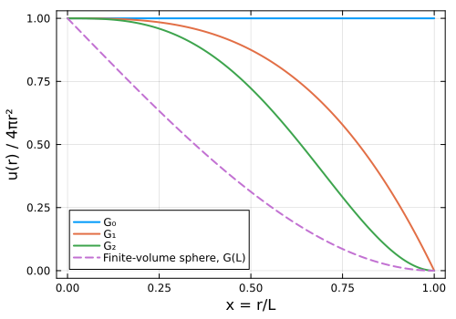
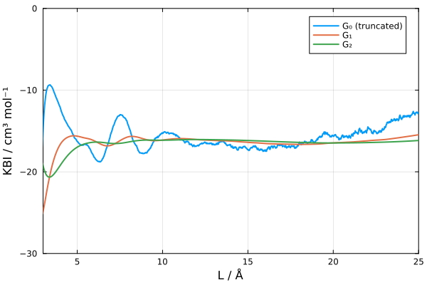
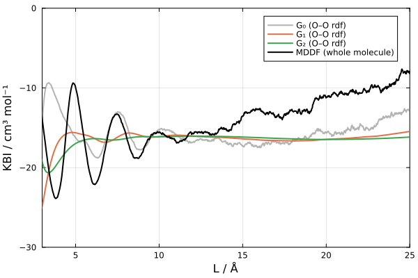
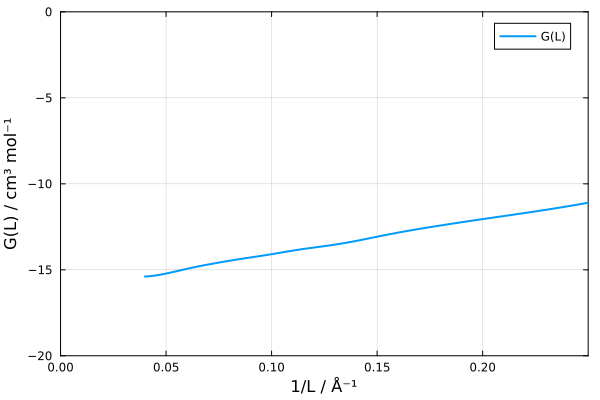
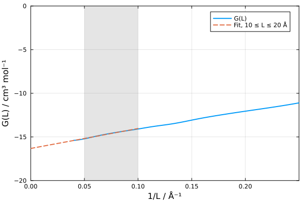

Kirkwood-Buff integrals: convergence and finite-size corrections
When are finite-size corrections useful?
ComplexMixtures.jl is generally used to study the solvation of large or complex-shaped solutes, such as proteins, polymers, or membranes. For these, the KB integrals must be computed from minimum-distance distribution functions (MDDFs), available in the R.kb field of the result. As explained in the Concepts section, integrals of radial distribution functions are impractical in these cases: the distances required to reach the bulk solution in all directions around an anisotropic solute are much larger than those accessible in typical simulation boxes. And, currently, there is no theory of finite-size corrections for KB integrals computed from MDDFs.
The finite-size corrections described in this page apply, instead, to radial distribution functions, which are meaningful when the solute can be represented by a single atom. This is the typical case of mixtures of small molecules — water, alcohols, common solvents and cosolvents — where one is interested in the KB integrals between the components of the mixture, for example to compute preferential solvation parameters, activity coefficient derivatives, or partial molar volumes. In these cases, the corrections greatly improve the convergence of the KB integrals, as shown in the example below.
Running and finite-volume KBIs
The Kirkwood-Buff integral (KBI) of a pair of species is, in the thermodynamic limit, the integral of the excess density of the solvent around the solute, over all space:
\[G_\infty = \int_0^\infty h(r)\, 4\pi r^2\, dr, \quad h(r) = g(r) - 1.\]
In a simulation, $g(r)$ is known only up to a finite distance $L$ (the cutoff of the calculation), and the integral must be truncated. The Result object returned by mddf contains two such truncated integrals, as a function of the distance:
R.kb: the KBI computed from the minimum-distance distribution function (MDDF).R.kb_rdf: the KBI computed from the distribution of the distances to the reference atom of the solvent. If the solute has a single atom per molecule, this is the radial distribution function (RDF) of the pair, andR.kb_rdfis the usual "running" KBI.
The running KBI converges poorly with $L$: the oscillations of $h(r)$ are amplified by the $r^2$ factor, and the integral oscillates around its limiting value even at long distances. For radial distribution functions, the convergence can be greatly improved by using the results of the theory of finite-volume KBIs, as proposed by Krüger and Vlugt [1,2], implemented in the kbi, finite_volume_kbi and extrapolate_kbi functions, which are described here.
Theory in brief
Finite-volume KBIs
The KBI of a finite (sub)volume $V$, $G(V)$, measures the particle number fluctuations inside $V$. It can be written as a radial integral with a purely geometrical weight, which, for a sphere of diameter $L$, is [1,2]:
\[G(L) = \int_0^L h(r)\, 4\pi r^2 \left(1 - \frac{3}{2}x + \frac{1}{2}x^3\right) dr, \quad x = \frac{r}{L}.\]
Note that $r$ is the distance between two points inside the sphere, thus it varies from $0$ to the diameter $L$, and $G(L)$ requires $g(r)$ up to $r = L$. For large $L$, [2]
\[G(L) = G_\infty + \frac{F_\infty}{L} + O\left(\frac{1}{L^2}\right),\]
where $F_\infty$ is a surface term. $G(L)$ is a smooth function of $L$, but it is not an estimate of $G_\infty$: it differs from it by $F_\infty/L$, which decays slowly. $G_\infty$ can, however, be obtained by extrapolating $G(L)$ as a function of $1/L$ to $1/L \to 0$.
Improved estimators of the infinite-volume KBI
Using the relation above, Krüger and Vlugt derived weight functions that estimate $G_\infty$ directly from $g(r)$ known up to $L$ [1,2]:
\[G_k(L) = \int_0^L h(r)\, u_k(r)\, dr\]
with
| Estimator | Weight, $u_k(r)$, $x = r/L$ | Behavior |
|---|---|---|
| $G_0$ | $4\pi r^2$ | The truncated integral. Large oscillations. |
| $G_1$ | $4\pi r^2 (1 - x^3)$ | Ref. [1]. Smaller oscillations. |
| $G_2$ | $4\pi r^2 \left(1 - \frac{23}{8}x^3 + \frac{3}{4}x^4 + \frac{9}{8}x^5\right)$ | Ref. [2], Eq. 24. Error $\sim 1/L^3$. Recommended. |
The weights of $G_1$ and $G_2$ go to zero at $r = L$, smoothly in the case of $G_2$. Thus, the oscillations of $h(r)$ near the truncation point do not propagate to the integral, which is the reason of the poor convergence of $G_0$. The weight functions are shown below:
using Plots
x = range(0, 1, length=200)
plot(x, ones(length(x)); label="G₀", linewidth=2)
plot!(x, @. 1 - x^3; label="G₁", linewidth=2)
plot!(x, @. 1 - 23/8 * x^3 + 3/4 * x^4 + 9/8 * x^5; label="G₂", linewidth=2)
plot!(x, @. 1 - 3/2 * x + 1/2 * x^3; label="Finite-volume sphere, G(L)", linewidth=2, linestyle=:dash)
plot!(xlabel="x = r/L", ylabel="u(r) / 4πr²", framestyle=:box, size=(500, 350))
When can these corrections be used
Radial distribution functions only. The theory applies to functions of the distance between two points (two atoms). Thus, the solute must be defined with a single atom per molecule (for example, the oxygen atom of water). The solvent may contain more than one atom: the distances are computed to its reference atom (by default, the first atom of the molecule). If the solute has more than one atom per molecule, the functions will issue a warning, because the distribution is a minimum-distance distribution, for which the theory does not apply.
Truncation, not ensemble, errors. The corrections address the truncation of the integral at a finite distance. They do not correct the systematic error of $g(r)$ computed from simulations of closed systems (with a fixed number of molecules), nor errors in the estimate of the bulk density. These errors are small at each distance, but are amplified by the $r^2$ factor, and appear as a drift of all estimators at long distances. The values should be taken from a range of distances where the estimates are stable.
Example: water
Here we use the oxygen-oxygen distribution function of a simulation of pure water (6845 molecules, cubic box of ~58.7 Å), computed up to 25 Å. The solute and the solvent were defined by the water oxygen atoms only, thus the distribution is a radial distribution function:
using ComplexMixtures
using ComplexMixtures: data_dir
R = load(joinpath(data_dir, "NAMD", "water", "rwO_20_25.json"))
R.solute.natomspermol # must be one1Improved running KBIs
The kbi function returns the running KBIs computed with the different estimators, as a function of the upper limit of integration, L, which corresponds to the distances of R.d:
g0 = kbi(R; correction=:G0) # same as R.kb_rdf
g1 = kbi(R; correction=:G1)
g2 = kbi(R; correction=:G2)
plot(R.d, g0; label="G₀ (truncated)", linewidth=2)
plot!(R.d, g1; label="G₁", linewidth=2)
plot!(R.d, g2; label="G₂", linewidth=2)
plot!(xlabel="L / Å", ylabel="KBI / cm³ mol⁻¹", ylims=(-30, 0), xlims=(3, 25), framestyle=:box, size=(600, 400))
The truncated integral, $G_0$, oscillates significantly, and its value depends strongly on the distance at which it is read. $G_1$ and, particularly, $G_2$ are much more stable, and reach a plateau already at about 8 Å. A good estimate of $G_\infty$ is the average value of $G_2$ in the plateau:
using Statistics
plateau = findall(L -> 10 <= L <= 20, R.d)
mean(g2[plateau]), std(g2[plateau])(-16.220400063481517, 0.14801273372828488)At distances larger than ~18 Å, an upward drift is visible in $G_0$ and, to a lesser extent, in $G_1$, while $G_2$ is barely affected. Since this drift is not a truncation effect, it is probably associated with the closed-system errors mentioned above, and the estimates at shorter distances are preferable.
As a reference, the KBI of a pure liquid is related to its isothermal compressibility, $\kappa_T$, by $G_\infty = RT\kappa_T - 1/\rho$, where $\rho$ is the molar density. For water at 298 K, the experimental value is $G_\infty \approx 1.1 - 18.1 \approx -17$ cm³ mol⁻¹. The exact value obtained from the simulation depends on the water model, and on the sampling.
Comparison with the MDDF of the whole molecule
For comparison, the same simulation was analyzed using the complete water molecules (three atoms) as both solute and solvent. The result is a minimum-distance distribution function (MDDF), and its KBI, R.kb, is the one available for solutes with more than one atom:
Rw = load(joinpath(data_dir, "NAMD", "water", "rw_20_25.json"))
Rw.solute.natomspermol # three atoms: minimum-distance distribution3plot(R.d, g0; label="G₀ (O–O rdf)", linewidth=2, color=:gray, alpha=0.6)
plot!(R.d, g1; label="G₁ (O–O rdf)", linewidth=2)
plot!(R.d, g2; label="G₂ (O–O rdf)", linewidth=2)
plot!(Rw.d, Rw.kb; label="MDDF (whole molecule)", linewidth=2, color=:black)
plot!(xlabel="L / Å", ylabel="KBI / cm³ mol⁻¹", ylims=(-30, 0), xlims=(3, 25), framestyle=:box, size=(600, 400))
The MDDF-based KBI reaches values similar to those of $G_2$ at about 8–12 Å (around -15.7 cm³ mol⁻¹, against about -16 for $G_2$), but it does not display a stable plateau: it drifts upward at larger distances (to about -8 cm³ mol⁻¹ at 25 Å), while $G_2$ remains essentially constant. The drift of the uncorrected estimators at long distances, discussed above, is of the same magnitude in $G_0$ and in the MDDF KBI for $L > 16$ Å. The additional drift of the MDDF KBI in this run originates mostly in the 12–16 Å range, where the MDDF deviates from one by only ~4×10⁻⁴: an amount comparable to the uncertainty in the bulk density, which the $r^2$-like growth of the integration weight amplifies. We found no evidence that this additional drift is intrinsic to the MDDF. The truncation corrections $G_1$ and $G_2$, however, cannot be applied to it, and the MDDF KBI remains dependent on the distance at which it is read.
Finite-volume KBIs and extrapolation
The finite_volume_kbi function computes the finite-volume KBIs of spheres of diameter $L$, for all $L$ up to the cutoff. Since $G(L) = G_\infty + F_\infty/L$, the plot of $G(L)$ as a function of $1/L$ must be linear for large enough $L$:
fv = finite_volume_kbi(R)FiniteVolumeKBI with 1250 points:
L from 0.02 to 25.0 Å
G(L) at the largest L: -15.389 cm³ mol⁻¹plot(1 ./ fv.L, fv.G; label="G(L)", linewidth=2)
plot!(xlabel="1/L / Å⁻¹", ylabel="G(L) / cm³ mol⁻¹", xlims=(0, 0.25), ylims=(-20, 0), framestyle=:box, size=(600, 400))
The function extrapolate_kbi fits the linear relation to the data in a range of values of $L$, and returns the intercept, $G_\infty$, and the slope, $F_\infty$. Here, we use $10 \leq L \leq 20$ Å:
ext = extrapolate_kbi(fv, (10.0, 20.0))(Ginf = -16.319228329820294, F = 22.82704237087549)The line obtained can be compared with the data, to check if the relation is linear in the range chosen:
x = range(0, 0.1, length=10)
plot!(x, ext.Ginf .+ ext.F .* x; label="Fit, 10 ≤ L ≤ 20 Å", linewidth=2, linestyle=:dash)
vspan!([1 / 20, 1 / 10]; alpha=0.2, color=:gray, label=nothing)
The extrapolated value is consistent with the plateau of $G_2$. The result of the extrapolation should not depend much on the range of $L$ used. This must be checked, because the linear relation is valid only for $L$ larger than the correlation length of the fluid, and the data at large $L$ may be affected by the drift discussed above:
for Lrange in ((8.0, 16.0), (10.0, 20.0), (10.0, 25.0), (15.0, 25.0))
(; Ginf, F) = extrapolate_kbi(fv, Lrange)
println("L range: $Lrange Å: Ginf = $(round(Ginf; digits=2)) cm³/mol, F = $(round(F; digits=1)) cm³ Å/mol")
endL range: (8.0, 16.0) Å: Ginf = -16.09 cm³/mol, F = 20.0 cm³ Å/mol
L range: (10.0, 20.0) Å: Ginf = -16.32 cm³/mol, F = 22.8 cm³ Å/mol
L range: (10.0, 25.0) Å: Ginf = -16.36 cm³/mol, F = 23.3 cm³ Å/mol
L range: (15.0, 25.0) Å: Ginf = -16.42 cm³/mol, F = 24.6 cm³ Å/molInterpreting the results
Prefer $G_2$. The
:G2estimator ofkbiis the simplest and most robust estimate of $G_\infty$. Plot it as a function of $L$, and report the value (or average) in the range where it is stable.Use the extrapolation as a cross-check. The extrapolation of $G(L)$ relies on a fit, whose result depends on the range of $L$, and involves an extrapolation from $1/L \sim 0.05$ Å⁻¹ to zero, which amplifies the noise. When $G_2$ and the extrapolation agree, the result is reliable.
The surface term, $F_\infty$, is a property of the fluid, and describes how the density fluctuations in a finite volume deviate from those of the infinite system. It has units of cm³ mol⁻¹ Å here.
Drifts at long distances. If all estimators drift at long distances, the drift is not a truncation effect, and these corrections cannot remove it. It usually indicates a closed-system error in $g(r)$, or an imprecise estimate of the bulk density. In this case, use the values at shorter distances, where the estimates are stable, increase the size of the simulation box, or consider corrections for closed systems [3].
Minimum-distance distributions. For solutes with more than one atom (proteins, polymers, etc.), use the KBI computed from the MDDF,
R.kb. The corrections described here do not apply. The convergence of MDDF-based KBIs is discussed in the Kirkwood-Buff integrals and convergence and Finite-size corrections sections of the Concepts page.
Reference functions
ComplexMixtures.kbi — Function
kbi(R::Result; correction::Symbol=:none)Compute the Kirkwood-Buff integral (KBI) from the data in the Result object R, as a function of the upper integration limit, optionally using the improved estimators of the infinite-volume KBI proposed by Krüger and Vlugt [1,2].
The output is a vector with the same length as R.d, in units of cm³ mol⁻¹.
Correction types
:none(default): the KBI computed from the MDDF, without any correction (R.kb).:G0: the KBI computed from the RDF without any correction (R.kb_rdf), that is, the truncated integral $G_0(L) = \int_0^L h(r) 4\pi r^2 dr$, where $h(r) = g(r) - 1$.:G1: the extrapolation of Ref. [1], $G_1(L) = \int_0^L h(r) 4\pi r^2 (1 - x^3) dr$, with $x = r/L$.:G2: the extrapolation of Ref. [2] (Eq. 24), $G_2(L) = \int_0^L h(r) 4\pi r^2 (1 - \frac{23}{8}x^3 + \frac{3}{4}x^4 + \frac{9}{8}x^5) dr$. This is the estimator that converges faster to the infinite-volume KBI (with error $\sim 1/L^3$).
The :G1 and :G2 estimators are computed from the RDF counts (R.rdf_count and R.rdf_count_random), and are only valid if the distribution is a radial distribution function, which requires that the solute contains a single atom per molecule (the solvent can contain any number of atoms, as the distances are computed to its reference atom).
The estimators correct for the truncation of the integral at a finite distance. They do not correct the systematic error of the distribution functions computed in closed (canonical) simulation boxes, which may cause a drift of the KBIs at long distances.
See also finite_volume_kbi and extrapolate_kbi.
References
- P. Krüger, S. K. Schnell, D. Bedeaux, S. Kjelstrup, T. J. H. Vlugt, J.-M. Simon, Kirkwood–Buff Integrals for Finite Volumes. J. Phys. Chem. Lett. 4, 235 (2013). DOI: 10.1021/jz301992u
- P. Krüger, T. J. H. Vlugt, Size and shape dependence of finite-volume Kirkwood-Buff integrals. Phys. Rev. E 97, 051301(R) (2018). DOI: 10.1103/PhysRevE.97.051301
ComplexMixtures.finite_volume_kbi — Function
finite_volume_kbi(R::Result)Compute the finite-volume Kirkwood-Buff integrals $G(L)$ of spheres of diameter $L$, for each $L$ up to the cutoff of the distribution function, using the exact weight function of the sphere [1,2]:
\[G(L) = \int_0^L h(r) 4\pi r^2 \left(1 - \frac{3}{2}x + \frac{1}{2}x^3\right) dr, \quad x = r/L\]
where $h(r) = g(r) - 1$. For large $L$, $G(L) = G_\infty + F_\infty/L + O(1/L^2)$, where $G_\infty$ is the infinite-volume KBI and $F_\infty$ is a surface term. Thus, $G_\infty$ can be obtained by extrapolating $G(L)$ as a function of $1/L$ to $1/L \to 0$, which can be done with the extrapolate_kbi function.
Returns a FiniteVolumeKBI object, with fields L (Å) and G (cm³ mol⁻¹).
As with the :G1 and :G2 corrections of kbi, this is only valid for radial distribution functions, thus the solute must contain a single atom per molecule.
Example
julia> R = load("water.json");
julia> fv = finite_volume_kbi(R);
julia> using Plots
julia> plot(1 ./ fv.L, fv.G; xlabel="1/L (Å⁻¹)", ylabel="G(L) (cm³ mol⁻¹)")
julia> extrapolate_kbi(fv, (10.0, 20.0))
(Ginf = -16.3, F = 22.8)References
- P. Krüger, S. K. Schnell, D. Bedeaux, S. Kjelstrup, T. J. H. Vlugt, J.-M. Simon, Kirkwood–Buff Integrals for Finite Volumes. J. Phys. Chem. Lett. 4, 235 (2013). DOI: 10.1021/jz301992u
- P. Krüger, T. J. H. Vlugt, Size and shape dependence of finite-volume Kirkwood-Buff integrals. Phys. Rev. E 97, 051301(R) (2018). DOI: 10.1103/PhysRevE.97.051301
ComplexMixtures.extrapolate_kbi — Function
extrapolate_kbi(fv::FiniteVolumeKBI, Lrange::Tuple{Real,Real})
extrapolate_kbi(R::Result, Lrange::Tuple{Real,Real})Extrapolate the finite-volume KBIs $G(L)$ to the infinite-volume limit, by a linear least-squares fit of
\[G(L) = G_\infty + F_\infty \frac{1}{L}\]
to the data with Lrange[1] <= L <= Lrange[2] (in Å).
Returns a named tuple (Ginf, F), with the infinite-volume KBI, Ginf (cm³ mol⁻¹), and the surface term, F (cm³ mol⁻¹ Å).
The relation is valid only for $L$ larger than the correlation length of the fluid, and the result depends on the range chosen. Plot fv.G as a function of 1 ./ fv.L to choose a range where the dependence is linear.
If a Result object is provided, the finite-volume KBIs are computed with finite_volume_kbi.
ComplexMixtures.FiniteVolumeKBI — Type
FiniteVolumeKBIStructure that contains the finite-volume KBIs of spheres of diameter L, as computed by finite_volume_kbi.
Fields
L::Vector{Float64}: diameters of the spheres (Å).G::Vector{Float64}: finite-volume KBIs (cm³ mol⁻¹).
References
- P. Krüger, S. K. Schnell, D. Bedeaux, S. Kjelstrup, T. J. H. Vlugt, J.-M. Simon, Kirkwood–Buff Integrals for Finite Volumes. J. Phys. Chem. Lett. 4, 235 (2013). DOI: 10.1021/jz301992u
- P. Krüger, T. J. H. Vlugt, Size and shape dependence of finite-volume Kirkwood-Buff integrals. Phys. Rev. E 97, 051301(R) (2018). DOI: 10.1103/PhysRevE.97.051301
- P. Ganguly, N. F. A. van der Vegt, Convergence of Sampling Kirkwood–Buff Integrals of Aqueous Solutions with Molecular Dynamics Simulations. J. Chem. Theory Comput. 9, 1347 (2013). DOI: 10.1021/ct301017q